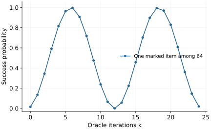

Research question
What can quantum computers compute efficiently?
Interference produces remarkable algorithms, but the boundary of efficient quantum computation is still incompletely understood.
A worked entry into an open research direction · Sources checked 20 October 2026
The question in perspective
A quantum state of \(n\) qubits has \(2^n\) amplitudes, but a measurement does not return that list. Computational power depends on whether a short, constructible sequence of gates can make a useful answer observable with sufficiently high probability.
We must specify an input encoding and a family of instances. A single fast calculation says little about how cost grows with input length.
From amplitudes to a complexity claim
Let \(x\) be an \(n\)-bit classical input and \(U_x\) a uniformly generated circuit using a polynomial number of elementary gates and qubits. If \(\Pi_1\) projects onto an accepting output, its acceptance probability is
\[p_x=\|\Pi_1 U_x\ket{0\cdots0}\|^2.\]
A decision problem is in BQP when such circuits give \(p_x\geq2/3\) on yes instances and \(p_x\leq1/3\) on no instances. Uniform generation means the circuit description itself is obtainable efficiently; we cannot hide a difficult answer in its construction. BPP is the corresponding class for polynomial-time randomized classical computation.
A useful controlled example is search over \(N\) labels with one marked item \(w\). Assume access to the phase oracle \(O_f\ket j=(-1)^{f(j)}\ket j\). Let \(\ket r\) be the normalized uniform superposition of unmarked labels. The uniform input is
\[\ket s=\sin\theta\ket w+\cos\theta\ket r,\qquad \sin\theta=1/\sqrt N.\]
One oracle reflection followed by reflection about \(\ket s\) rotates this plane by \(2\theta\). After \(k\) iterations,
\[p_{\rm success}(k)=\sin^2((2k+1)\theta).\]
About \(\pi\sqrt N/4\) oracle calls suffice for high success probability. For \(N=4\), \(\theta=\pi/6\), and one iteration succeeds with certainty. The calculation concerns oracle calls; preparing \(\ket s\), implementing the oracle, and reading the output also have costs.

What is established
Shor’s algorithms factor integers and compute discrete logarithms with polynomial quantum resources. Their existence does not prove a classical lower bound for those tasks.
Quantum query lower bounds show the square-root search scaling is optimal in the unstructured black-box model. They do not prohibit exploiting an explicit problem’s extra structure. Watrous’s complexity survey develops the broader decision and verification framework.
What remains unresolved
Whether BPP equals BQP remains unresolved; neither a large Hilbert space nor a sampling experiment supplies an unconditional separation. There is also no established general efficient quantum algorithm for all NP-complete problems. Useful advances require either a new algorithm under a clear access model, a stronger lower bound, or a sharper classical simulation method.
A concrete next investigation
Reproduce: track the two amplitudes in search for several \(N\), including iterations beyond the optimum. Confirm that continuing to iterate can reduce success.
Check: replace a unit-cost oracle with a reversible implementation and count its elementary gates, workspace, and cleanup.
Extend: choose a structured search family and compare quantum and classical algorithms using the same representation. A useful claim reports preparation, precision, repetitions, and output costs; a black-box speedup alone is not an end-to-end advantage.
Selected references
- Quantum Computational Complexity
John Watrous. 2008. Survey
Definitions and results for quantum decision, verification, and interactive proof classes.
- Polynomial-Time Algorithms for Prime Factorization and Discrete Logarithms on a Quantum Computer
Peter W. Shor. 1995. Research paper
Polynomial-time quantum algorithms; does not establish corresponding classical lower bounds.
- Strengths and Weaknesses of Quantum Computing
Charles H. Bennett, Ethan Bernstein, Gilles Brassard, Umesh Vazirani. 1997. Research paper
Black-box lower bounds and the limitations of unstructured quantum search.
Years refer to first arXiv submission. Publication details are available in the linked records.